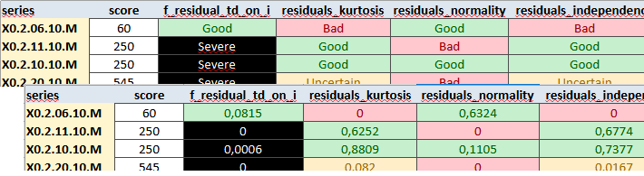
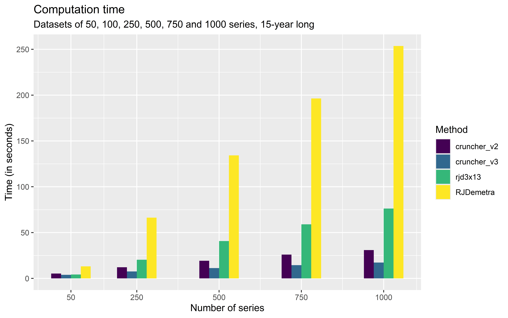

library("rjd3workspace")
# Creation of a workspace and SA-Processing
my_ws <- jws_new()
jsap1 <- jws_sap_new(my_ws, "sap1")
# Filling in with sa-item
y <- rjd3toolkit::ABS$X0.2.09.10.M # raw series
add_sa_item(jsap1, name = "serie_1", x = y, rjd3x13::x13_spec())
# Saving the workspace as an .xml file readable with the GUI
save_workspace(my_ws, "C:/my_folder/workspace_test.xml")Part 2: Building a production process
Two approaches
JDemetra+ allows to use of seasonal adjustment algorithms via R packages or the graphical user interface (GUI). The use of the GUI is generally motivated by a subsequent manual fine-tuning step, which is greatly facilitated by an organized view of the results and diagnostics, as well as the ability to modify specifications in a guided manner. However, using the GUI does not require the user to perform all operations manually with the mouse. There are two ways to automate the process: the Cruncher can be used to run estimations and export outputs, while the rjd3production and rjd3workspace packages can be used to bulk operations such as customizing specifications.
Producers who make little or no use of manual fine-tuning are increasingly inclined to use R functions directly and therefore only manipulate TS (Time Series) objects, freeing themselves from the workspace structure. However, these two approaches are not mutually exclusive; it is entirely possible to recreate a functional workspace (readable by the GUI and crunchable) from R objects.
In the rest of this section, we will first look at the case of using the GUI, then discuss the case of using R packages exclusively.
Using the graphical user interface
Using the GUI therefore requires organization into workspace(s). These can be created manually 🔗 or via an R script, based on the following code
Selection and assignment of a set of calendar regressors
As a preliminary step to estimation, the selection of calendar regressors consists of determining which set of provides the best correction for each series. To do this, we suggest following these steps:
Create a set of regressors to test, as detailed in Attal-Toubert (2012) and illustrated in appendices 🔗
run automatic seasonal adjustment (possibly keeping a relevant predefined set of outliers, for example those corresponding to the COVID period) for all the pre-selected sets of regressors
note the relative effectiveness of each set by penalizing residual trading days effects
choose the set with the best score
A function in the {rjd3production} package covers these steps and returns a table where to each input series corresponds the best set.
my_context <- create_insee_context()
my_context$variables <- my_context$variables[c("REG1", "REG1_LY", "REG6", "REG6_LY")]
td_table <- select_regs(my_series, context = my_context)- assign the selected set to each series of the workspace by declaring it in the corresponding specification
assign_td(td = td_table, jws = my_ws)Customization of specifications
Beyond the choice of a set of calendar regressors, each series is likely to have specific characteristics that the producer wishes to impose: pre-specified outliers, a decomposition scheme, or an estimation period are the most common examples. This customization can be done via the graphical interface for a small number of series or may require the execution of a script in the case of a large number of series.
In the following example, we modify one SA-Item (jsai):
library(rjd3workspace)
# reading the *workspace*
jws <- jws_open("C:/my_folder/workspace_test.xml")
# retrieving the sa-item in the *workspace* (here the first of the first SA-processing)
jsap <- jws_sap(jws, 1L)
jsai <- jsap_sai(jsap, 1L)
spec0 <- get_domain_specification(jsai)
spec1_with_outliers <- rjd3toolkit::add_outlier(
x = spec0,
type = c("AO", "AO", "LS"),
date = c("2020-02-01", "2020-03-01", "2014-08-01")
)
spec2_with_new_span <- rjd3toolkit::set_basic(spec1_with_outliers, type = "From", d0 = "2012-01-01")
spec3_with_td <- rjd3toolkit::set_tradingdays(
spec2_with_new_span,
option = "UserDefined",
uservariable = c("REG1.group_1", "REG1.group_2"),
test = "None"
)
set_domain_specification(jsap, 1L, spec3_with_td)Here we assign pre-specified sets of outliers to an entire workspace :
assign_outliers(outliers = outliers_table, jws = my_ws)Outliers can be stored in an “*.yaml” file or imported from en existing workspace.
It is also possible to retrieve X13-Arima or Tramo-Seats specifications from X13-Arima-Seats software and make them compatible with JDemetra+. We describe this migration procedure in appendices 🔗.
Estimation
Once the specifications have been set in their initial version, before any modification based on the diagnostics, the estimation can be launched manually in the graphical interface. It is very common to automate this step with the Cruncher, which will directly export the output (series and diagnostics). This avoids opening the GUI by running the code below:
library("rjwsacruncher")
cruncher_and_param(
workspace = "C:/my_folder/my_ws.xml",
rename_multi_documents = FALSE,
policy = "complete"
)A subdirectory /output is created in the workspace directory with the files containing the series and the file containing the diagnostics and parameters (demetra_m.csv). The objects to be exported are selected by setting options in R. The corresponding code can be viewed here 🔗.
In the example above, the policy is “complete” (or “concurrent”), which is the only choice possible for an initial estimation. We will return to this parameter and the various refresh policies available in the third part 🔗 in more detail.
Although it is possible to organize series into several SAProcessings in a JDemetra+ workspace, it should be noted that the Cruncher will always act on an entire workspace.
The path to the physical location of the data must be specified. This link is entered in the workspace 🔗 when the data is assigned to it. If the data has been moved before the estimation is updated, the path must be updated. This can be done with the following functions in the case of an Excel workbook:
# Loading the workspace
my_ws <- jws_open("C:/my_folder/workspace_test.xml")
# Updating the path for the first SA-Processing
spreadsheet_update_path(
jws = my_ws,
new_path = "C:/my_data/My_Series.xlsx",
idx_sap = 1
)
# Saving the workspace (wrinting the file on the disk)
save_workspace(my_ws, "C:/my_folder/workspace_test.xml")The case of a “.txt” or “.csv” file is illustrated here 🔗.
Quality Report
A quality report is constructed by assigning each series a score based on diagnostics selected from the JDemetra+ output. This makes it possible to quickly identify the series with the poorest statistical quality and thus target manual fine-tuning. The statistical score can also be weighted by the importance of the series in the dissemination process to achieve an even more pragmatic selection.
The {JDCruncheR} package produces this report based on the diagnostics and parameters in the “demetra_m.csv” file generated by the rjwsacruncher::cruncher_and_param function. This file can also be generated directly via the GUI using drop-down menus 🔗.
BQ <- JDCruncheR::extract_QR("C:/Workspaces/my_ws/Output/SAProcessing-1/demetra_m.csv")The extraction parameters are detailed in the documentation for the extractQR 🔗 function.
A set of diagnostics, detailed in the appendices 🔗, relating in particular to residual seasonality, residual trading day effects, and the whiteness of the residuals, are selected. Each of these is assigned a rating (“Good,” “Uncertain,” “Bad,” or “Severe”) according to thresholds that can be viewed using the option below:
library("JDCruncheR")
getOption("jdc_thresholds")These thresholds can be configured using the JDCruncher::set_threshold() 🔗 function.
Each modality corresponds to a grade, so (“Good,” “Uncertain,” “Bad,” or “Severe”) will become (0, 1, 3, 5). The score for a series is the weighted average of its scores, and its quality is lower when the score is higher. The residual seasonality tests on the seasonally adjusted series and on the irregular have the highest weights. The complete score equation is detailed in the appendices 🔗.
This equation can also be configured with the score_pond argument of the compute_score() 🔗 function.
The result can be exported to Excel, where it is organized as follows by default:
a sheet with the diagnostic methods for each series
a sheet with the values, including the score, the weighted score, and the main contributions to the score
The user can enrich this file and document the manual fine-tuning of the workspace. Sorting by descending (weighted) score yields the expected selective editing.
Below is an excerpt from the Excel export of the quality report, by default:

Guided by the quality report, the producer modifies the specifications to improve seasonal adjustment, generally using the graphical interface. To generate the final output, particularly the series, they can restart the Cruncher, no longer with the policy=“complete” option but using a refresh that re-estimates only the coefficients of the pre-adjustment model (“policy=regarimaparmeters”) and retains all of the user’s modifications. We provide more details on this point in the appendices 🔗.
library("rjwsacruncher")
cruncher_and_param(
workspace = "C:/my_folder/my_ws.xml",
rename_multi_documents = FALSE,
policy = "regarimaparameters"
)Using only R packages
All of the steps described above can be performed without using a workspace structure and remaining in the R environment.
Estimation
In this case, we use the functions rjd3x13::x13() 🔗 (or rjd3tramoseats::tramoseats() 🔗) to perform the estimations. Estimation functions work on one TS object which will require to set up loops or “lapply” type functions.
# for one series
mod <- x13(my_series, my_spec)
str(mod)Diagnostics and specifications
In R, you can access the same diagnostics as from the GUI and the Cruncher by navigating through the object produced by the estimation (list of lists), which you can directly organize into a customized quality report. To take advantage of the existing formatting, simply rewrite a crunchable workspace and regenerate the same report as in the GUI approach. To remain in one environment, manual modification of the specifications based on the diagnostics will in this case be done directly in the R script, as in the example below:
spec0 <- rjd3x13::x13_spec()
spec1_with_outliers <- rjd3toolkit::add_outlier(
x = spec0,
type = c("AO", "AO", "LS"),
date = c("2020-02-01", "2020-03-01", "2014-08-01")
)The loop of reading diagnostics and modifying parameters is less fluid, which encourages the use of the graphical interface approach in cases requiring intensive manual fine-tuning. To update specifications in R based on diagnostics, scripts must be modified directly, which is slower and more prone to error for analysts, especially those unfamiliar with R. The R-only approach makes storing and versioning specifications more complex.
The diagnostics used to construct the score presented above can be obtained directly in R, which allows the selective editing procedure to be replicated. The code for obtaining this output can be found in the appendices 🔗.
The R approach also eliminates any portability issues, even though updating the link between a workspace and the data is now simple and reliable.
Performance
We compared the performance of the two approaches. The graph below shows the computation times for seasonally adjusting a dataset, with outlier detection and calendar effect estimation with a preselected set of regressors, using the R packages (v2 and v3) or the cruncher (v2 or v3):

For a series number close to one thousand, the estimation with rjdx13 takes less than three minutes, which is still very reasonable for most users but far behind the Cruncher, which completes the same process in about twenty seconds.
Once the production process is in place, it is recommended to validate or adjust the settings annually and to adopt an infra-annual production strategy, generally monthly or quarterly, allowing the seasonally adjusted data to be updated when new raw data becomes available. This issue is tackled in the next part.